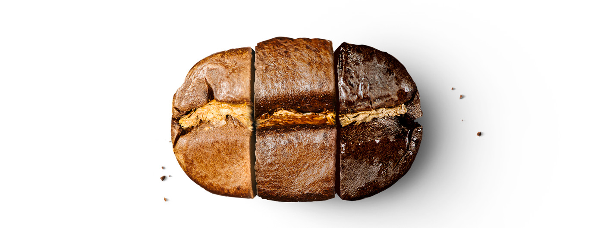

Roast Story
It is the cumulative, positive, and dramatic result of roasting each coffee in a unique way,
helping each one reach its maximum flavor. The color can be duplicated — but the taste cannot.
The coffee bean begins its life as the prize inside a bright red coffee cherry. It takes about five years before a coffee tree produces a harvestable crop of cherries, and each tree only produces the equivalent of a pound of roasted beans per year. To prepare the pebble-like green coffee beans for roasting, growers process them using either the natural or the washed method. Through the natural method, ripe coffee cherries are allowed to dry on the tree or on the ground before the beans are removed by hulling. Through the washed method, the beans are immediately separated from the cherries, submerged in a vat of water, and then dried on large patios or with modern equipment.
It takes about five years before a coffee tree produces a harvestable crop of cherries, and each tree only produces the equivalent of a pound of roasted beans per year.
Green coffee beans are heated in a large rotating drum, then their transformation begins. After about 5 to 7 minutes of intense heat, much of their moisture evaporates. The beans turn a yellow color and smell a little like popcorn. After about 8 minutes in the roaster, the “first pop” occurs. The beans double in size, crackling as they expand. They are now light brown. Very sour one-dimensional flavor notes are dominant, while more complex coffee flavors haven’t yet developed.

After 10-11 minutes in the roaster, the beans reach an even brown color, and oil starts to appear on the surface of the bean. At this roasting time (different for each coffee, but usually somewhere between 11 and 15 minutes), the full flavor potential begins to develop in the beans, bringing all of their attributes into balance.
The “second pop” signals that the coffee is almost ready. The moment that the coffee is released into the cooling tray is a memorable one. The smell of freshly roasted coffee fills the air, along with the sound of applause created by the final clapping of the “second pop.”
